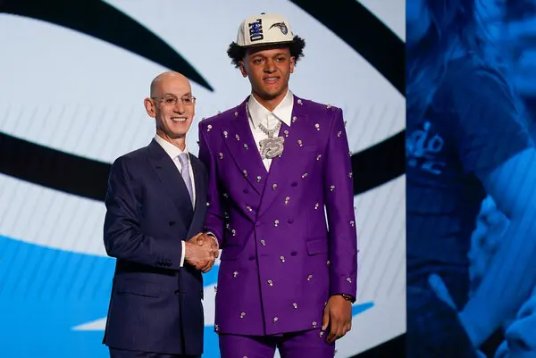

PROS OF BASKETBALL:
Fitness improvements:
One of the most important and most noticeable pro of basketball is the physical improvements. Basketball is a very physically demanding sport. It requires a lot of running, jumping, shooting and always being in motion. This really helps with improving your fitness levels. According to nhs.uk improving your fitness or just being active can help you live a better and more healthier life. It can also reduce your risk of developing diseases such as heart disease, type 2 diabetes, stroke, and some cancers.

Basketball is a team sport:
Since basketball is a team sport it can develop group skills. This is being able to work together with others and everyone has to do their part for the team to be successful. For example, if someone is not running back on defense, the opposing team will have a way easier chance of scoring because there will be one less player on defense. The coach will eventually substitute him out for someone who does a better job and people will not like playing with him. These skills aren't just important in basketball but are also very important in our daily lives. We will have to work with others either at school, work, home, friends, training, people, etc. This skill will help us be more productive in working with others and being able to finish on time. This also teaches us that we have to do our part well so the group can be successful. If we don’t the people we are working with will not like to work with us and we might get replaced.

Start without many equipments:
One of the best things about basketball is that you do not need a lot of equipment to play. You just need a basketball and find a hoop somewhere and you will be set. If you want to play inside, you will need basketball shoes but that's about it. That's a very positive thing about basketball.
Make new friends:
Since basketball is a team sport it will be easy to make new friends. You could go to an open court and join a match. You will get to know your teammates and you might build chemistry between you guys. You will also meet so many people that are also passionate about the same thing. It will be easier to be friends with them. You could take someone's number and arrange a day when you guys will play basketball together. You could also join a basketball club and this way you will be introduced to a lot of players. You will automatically make new friends. It will also be easy to make friends even though you are an introvert. So basketball is also a very good way of making new connections.

College scholarships:
Depending on how good you are, basketball is also a very good way of getting college scholarships. College tuition is usually quite expensive, so getting a scholarship to a college because of basketball would really help you save a lot of money. It would also be a very big achievement which you can write on your CV.

Basketball as a serious profession:
Basketball opens a lot of doors for being a pro and earning a lot of money. There are a lot of places where you could play pro basketball. If you really love the game and are ready to sacrifice a lot for it, being a pro would be a very good option. You will get to do something that you truly love for a good amount of your life. Your salary would also be extremely nice. You will also get to make a name for yourself and you might even be one of the best players who have ever played. This isn't easy at all, however, if you really put everything into it, basketball is a great opportunity for you to become a professional player.
Boost confidence levels and develop character:
Playing basketball seriously a lot will boost your confidence as well as develop your character. When you practice a lot and play a lot of games, you will start to feel more confident in your skills and yourself. Playing confidently on the court can result in also being more confident in yourself as a person. This could also develop your character. Working hard and playing confidently, can develop your character because it teaches you to stay disciplined and keep working hard.

You can unplug and free your mind
When passionately playing basketball you will unplug from the outside world and be free with your own mind. You will not have to deal with work stress or answer any calls or worry about anything. You get to be alone or be with other friends doing something you love. So playing basketball is a great way to unplug your worries and do something you love.